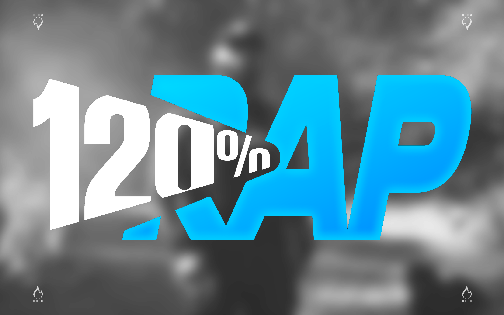
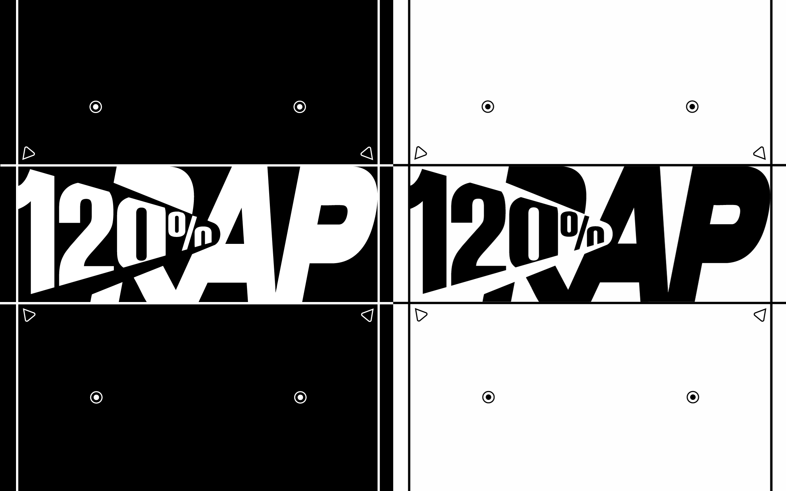
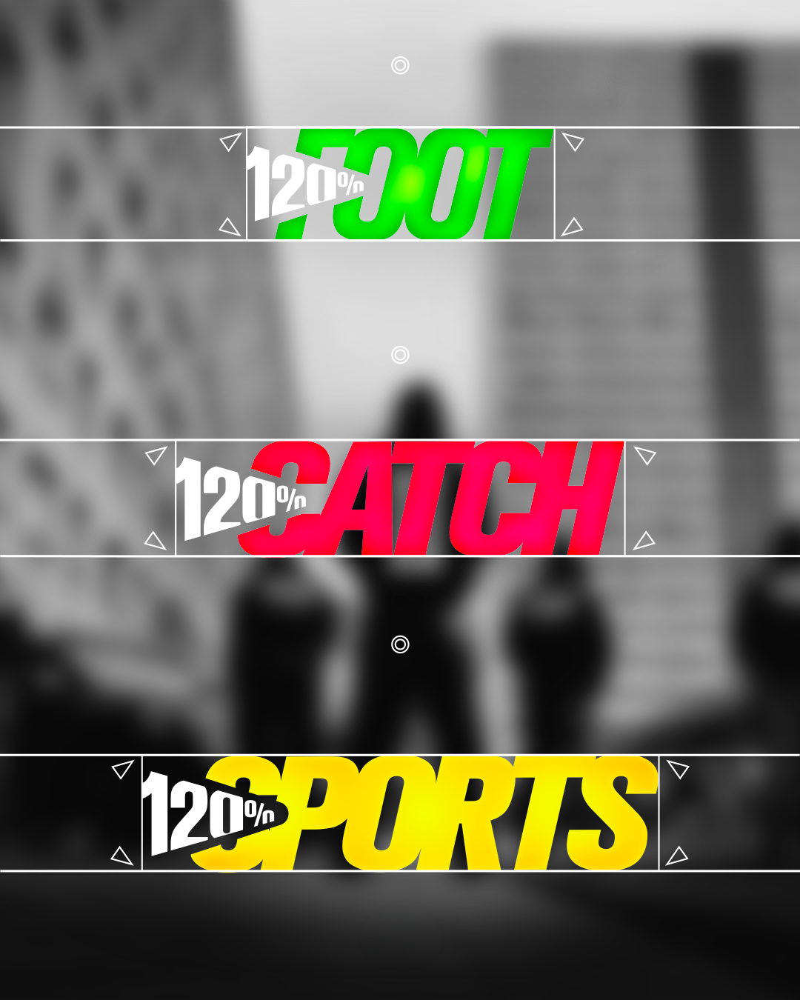
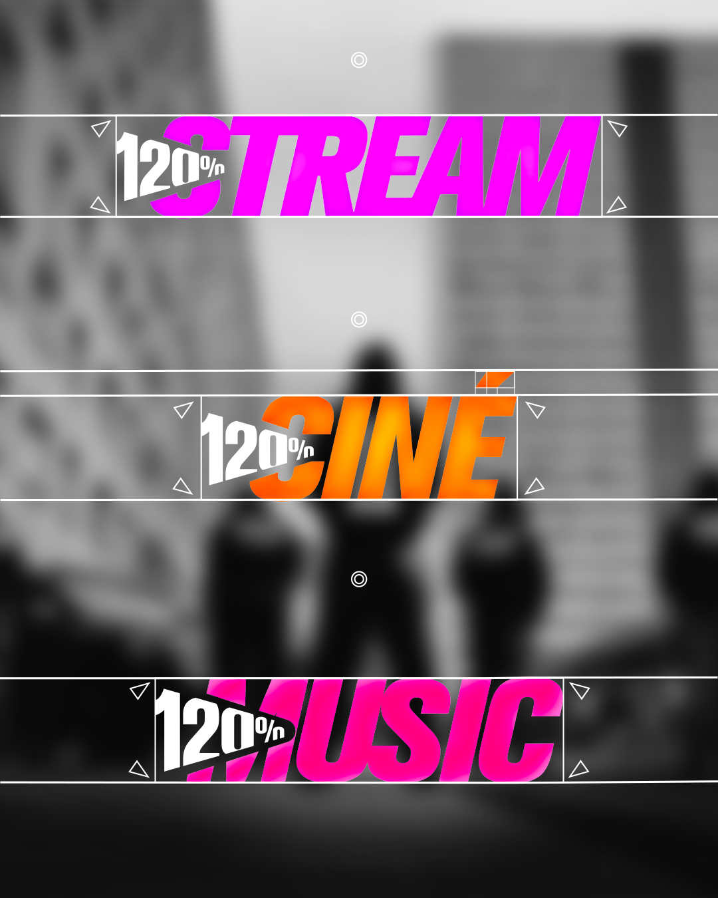

Brand design — Media & rap

A custom logo designed for a well-known digital media outlet (100K subscribers) focused primarily on rap news, conceived from the outset as a unique visual identity, available in a full range of color variations, capable of complementing any type of content while remaining instantly recognizable as 120%RAP.
A media outlet like 120%RAP publishes several types of content daily: music news, soccer, wrestling, movies, sports in general, and more. A simple static logo wouldn’t have been enough: the project required a variation system, in which each theme has its own color scheme while maintaining exactly the same basic structure. The “120%” block remains white and fixed in all versions; it serves as the brand’s anchor, recognizable at a glance. Meanwhile, the second block adopts a color scheme specific to its theme.

Rather than using an existing font, the 120%RAP logo was redesigned letter by letter from scratch. The vector design follows a very strict grid: uniform angles between letters, calibrated counterforms, and a fixed aspect ratio that ensure a crisp rendering at any scale, whether it’s a 40-px thumbnail in an Instagram feed or a full-screen poster.
The diagonal line that runs through the “120%” block creates a dynamic contrast with the more massive, vertical “RAP” block: this contrast gives the logo immediate legibility, even in motion (Stories, Reels, video intros). The entire system was delivered in positive and negative versions, tested and validated on both light and dark backgrounds. This is an essential requirement for a logo intended to appear weekly on dozens of different visuals.


Green for football, red for wrestling, gold for sports the same logic carries over to streaming, film and music content, with magenta, orange and pink signatures of their own. The result: in a feed where attention is won or lost in a fraction of a second, the audience identifies both the brand and the type of content before even reading the caption.

The real value of this project doesn't stop at the logo variations: each theme color was designed upfront as a cross-content color code, later reused by 120%RAP across its entire visual identity, templates, graphic elements and the staging of its different content formats. The logotype becomes the starting point of a coherent, scalable system, able to welcome new themes without ever losing brand recognition.
It's this systemic approach a single construction, a shared color grammar, variations designed for the media's real day-to-day use on social platforms that sets a complete art direction apart from a simple logo exercise.